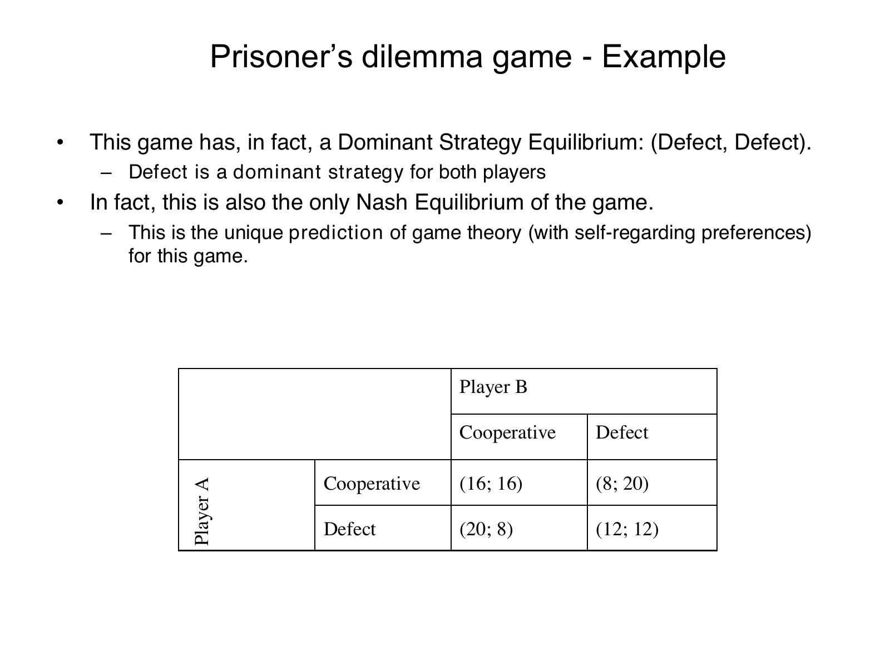

Derive prisoner's-dilemma dominance and finite repetition
Lesson outline
- 02IntroductionSee the main question, learning objectives and prerequisites.
- 03Key definitions and conceptsGet familiar with the important terms and notation.
- 04The prisoner's dilemma: a simultaneous conflictIn the lecture's prisoner's dilemma, two anonymous players cannot communicate and choose cooperate or defect simultaneously.
- 05Connect the reasoningExplore connect the reasoning.
- 06Worked exampleFollow a complete application of the reasoning.
- 07Practise the reasoningWork through written tasks, with optional support and solutions.
- 08Check your reasoning: an offline quizCheck your choices and see feedback without a connection.
- 09Check your understandingReview the key distinctions and check what you can explain.
- 10Test yourself laterTry another prepared question before rereading.
- 11SourcesFind the materials and limits behind the lesson.
Introduction
In this lesson, derive prisoner's-dilemma dominance and finite repetition.
2.1 What you’ll learn
- State simultaneous anonymous/no-communication setup and correctly map general symmetric \(a,b,c,d\) cells with \(c>a>b>d\).
- Compare own payoffs against each other action for both players, derive strict dominance and unique Nash(D,D), and explain the unilateral-deviation criterion.
- Contrast mutual cooperation with mutual defection, calculate sums and avoid assuming \(2a>c+d\) from ordering alone.
- Derive all-history defection backward for a commonly known fixed finite horizon with rational self-regarding players/fixed stage game/positive additive weights; state uncertain horizon or changed preferences outside this proof.
2.2 Before you begin
- No earlier lesson in this course is required. Review the definitions below before the worked example.
Check the foundations
A is the row player. In payoff pair \((7,11)\), which payoff does a purely monetary A compare? If its alternative gives \((9,4)\), which does it choose?
Reveal foundation explanation
compare own first coordinates 7 and 9; choose the alternative yielding 9. No upstream curriculum objective is required;
Key definitions and concepts
- Strict dominance: An action gives a strictly preferred payoff against every possible other-player action.
- Nash equilibrium: No player can gain by changing their action alone.
- Backward induction: Reason from the final period backwards under the specified fixed finite-horizon assumptions.
The prisoner's dilemma: a simultaneous conflict
In the lecture's prisoner's dilemma, two anonymous players cannot communicate and choose cooperate or defect simultaneously. Simultaneous means each chooses without knowing the other's current action. The first number in each payoff pair belongs to Player A, who chooses the row; the second belongs to Player B, who chooses the column. The monetary units are not specified on the numerical slide.
| Player A's action | B cooperates | B defects |
|---|---|---|
| Cooperate | \((16,16)\) | \((8,20)\) |
| Defect | \((20,8)\) | \((12,12)\) |

The full source slide preserves the numerical matrix and the lecture's dominant-strategy and Nash-equilibrium claims.
4.1 Dominance and Nash equilibrium
A strictly dominant strategy gives a player a higher payoff than the alternative for every action of the other player. Explanation of the matrix: if B cooperates, A gets 20 from defecting rather than 16 from cooperating; if B defects, A gets 12 rather than 8.
Defection is therefore strictly dominant for A. By symmetry, it is strictly dominant for B too.
A Nash equilibrium is a pair of strategies in which neither player benefits from changing their own choice while holding the other's fixed. Because each player's strict best response is always defection, \((D,D)\) is the unique Nash equilibrium under self-regarding preferences.
The classroom question on PDF p. 30 has no displayed poll results.
Each receives 12 in equilibrium, although mutual cooperation would give each 16. The difference is a conflict between the individually attractive deviation and the jointly preferable cooperative outcome.
From \((C,C)\), either player can gain 4 by defecting alone. From \((D,D)\), switching alone to cooperation loses 4.
Thus joint improvement does not make unilateral cooperation individually optimal. This illustrates the lecture's argument that privately costly cooperation can increase social welfare while a private incentive points toward defection.
4.2 General payoffs and finite repetition
The lecture's general symmetric matrix has \(c>a>b>d\):
| Player A's action | B cooperates | B defects |
|---|---|---|
| Cooperate | \((a,a)\) | \((d,c)\) |
| Defect | \((c,d)\) | \((b,b)\) |
Here \(c\) is the payoff from defecting against cooperation, \(a\) the mutual-cooperation payoff, \(b\) the mutual-defection payoff, and \(d\) the payoff from cooperating against defection. The inequalities \(c>a\) and \(b>d\) make defection strictly dominant; \(a>b\) makes mutual cooperation better for both than mutual defection.
These inequalities alone do not state that mutual cooperation maximizes the sum among every possible cell, since no condition comparing \(2a\) with \(c+d\) is given.
The lecture states that the unique subgame-perfect equilibrium of a finitely repeated prisoner's dilemma is defection in every period. Explanation of the required benchmark: take a fixed pair of rational, self-regarding players, a commonly known finite final period, the same stage game in every period, and payoffs given by the sum of the stage payoffs, possibly discounted by positive weights. In the last period there is no future reward or punishment left, so both defect after every possible preceding history.
In the penultimate period, last-period defection will occur regardless of today's choices, so the current dominant-strategy logic again gives defection. Repeating this argument backward establishes defection at every stage and after every history.
This is stronger than just specifying the actions on one realized path.
The result is conditional on that benchmark, especially the known finite horizon and self-regarding preferences. A chance to meet again does not by itself overturn the backward-induction argument. The argument presented here does not cover an uncertain or indefinite horizon, uncertainty about the other player's preferences, or the social-preference changes introduced next.
Connect the reasoning
- Symmetric monetary matrix: CC \((a,a)\),CD \((d,c)\),DC \((c,d)\),DD \((b,b)\), with \(c>a>b>d\). A compares first coordinates; B second. Anonymous players cannot communicate in the described setup.
- Against C, defect yields \(c>a\); against D, defect yields \(b>d\). D strictly dominates for A and by symmetry B. Therefore DD is the unique Nash equilibrium: either other action still makes D strictly optimal; no probability mixture can reverse a strict comparison. At CC, a player gains \(c-a\) by unilateral D. At DD, switching alone loses \(b-d\).
- Mutual cooperation gives each \(a>b\), so both are better than DD. However total in CC is \(2a\), in DD \(2b\) and in a mixed cellc+d. \(c>a>b>d\) alone does not order \(2a\) againstc+d. A claim that CC maximizes every monetary total needs that additional comparison, absent from general source assumptions.
- For rational self-regarding players with commonly known finite final period, fixed stage game and additive stage payoffs (possibly positive discounted weights), last-period D is optimal after every history because no future incentive remains. Last-period D is fixed regardless of penultimate choices, so the penultimate current comparison gives D; continue backwards to first. The unique subgame-perfect benchmark defects at every stage after every history, not just on the realized path.
- “They will meet again” does not overturn this known-finite logic. The proof does not cover uncertain/indefinite horizon, uncertainty about preferences or changed social preferences. Lecture observed cooperation motivates amendments; it supplies no poll responses or precise rate here.
Worked example
6.1 — Source numerical dilemma
Setup: Use the finished-note matrix with \(a=16, c=20, b=12, d=8\). Hypothetical finite-horizon illustration: 3 commonly known periods.
Worked reasoning and result: The symmetric matrix is \(\mathrm{CC}=(16,16)\), \(\mathrm{CD}=(8,20)\), \(\mathrm{DC}=(20,8)\), \(\mathrm{DD}=(12,12)\), satisfying \(c>a>b>d\). A chooses rows and reads first coordinates;
B chooses columns and reads second coordinates. Choices are simultaneous, anonymous and without communication.
For each player, \(D\) gives \(20>16\) against \(C\) and \(12>8\) against \(D\). \(D\) strictly dominates; \((D,D)\) is the unique monetary Nash equilibrium, stable against unilateral changes. Defecting alone from \(\mathrm{CC}\) gains \(4\);
switching alone from \(\mathrm{DD}\) to \(C\) loses \(4\). \(\mathrm{CC}\) gives each \(16>12\) compared with \(\mathrm{DD}\). Cell totals are \(\mathrm{CC}=32\), \(\mathrm{DD}=24\), \(\text{mixed}=28\); \(\mathrm{CC}\) has the largest total in this example.
The general ordering alone does not compare \(2a\) with \(c+d\). In period \(3\), \(D\) is optimal after every history because no future incentive remains.
That future defection is fixed regardless of the previous action, making \(D\) optimal in period \(2\); repeat backwards to period \(1\).
This all-history argument requires rational self-regarding players, a commonly known fixed finite horizon, a fixed stage game and additive stage payoffs with positive weights. It does not cover uncertain/indefinite horizons or uncertain/changed preferences;
merely meeting again does not overturn the proof. No classroom poll results or precise cooperation rate are supplied.
Checks and interpretation: Verify labels, active conditions, dimensions/signs where applicable and every source limitation before inferring a choice.
Practise the reasoning
Write your reasoning before revealing an explanation. Begin with support, then apply the ideas to another situation.
7.1 Written exercise 1
Hypothetical hypothetical: \(a=10, c=13, b=6, d=2\); 2 commonly known periods.
Solve the following:
- State the simultaneous anonymous/no-communication setup, map both players’ coordinates and construct the matrix.
- Compare both players’ own payoffs against each action, derive dominance and Nash stability through unilateral deviations.
- Calculate all cell totals and distinguish individual mutual improvement from a universal total-maximization claim.
- Derive defection after every history in finite repetition, naming each necessary assumption and the outside-proof cases.
Show a hint
Pause before calculating or choosing an explanation:
- What quantities, actors or outcomes are being compared? Write their roles, units and dates beside them.
- Which condition decides whether the relationship applies? Check the relevant definition before using a formula or classifying the case.
- What would have to remain fixed for your comparison to be meaningful? Work through one link in the reasoning at a time.
- How could you check the direction, boundary case or alternative explanation before stating your conclusion?
A local draft for your own study.
Reveal explanation
Key: The symmetric matrix is \(\mathrm{CC}=(10,10)\), \(\mathrm{CD}=(2,13)\), \(\mathrm{DC}=(13,2)\), \(\mathrm{DD}=(6,6)\), satisfying \(c>a>b>d\). A chooses rows and reads first coordinates;
B chooses columns and reads second coordinates. Choices are simultaneous, anonymous and without communication.
For each player, \(D\) gives \(13>10\) against \(C\) and \(6>2\) against \(D\). \(D\) strictly dominates; \((D,D)\) is the unique monetary Nash equilibrium, stable against unilateral changes. Defecting alone from \(\mathrm{CC}\) gains \(3\);
switching alone from \(\mathrm{DD}\) to \(C\) loses \(4\). \(\mathrm{CC}\) gives each \(10>6\) compared with \(\mathrm{DD}\). Cell totals are \(\mathrm{CC}=20\), \(\mathrm{DD}=12\), \(\text{mixed}=15\); \(\mathrm{CC}\) has the largest total in this example.
The general ordering alone does not compare \(2a\) with \(c+d\). In period \(2\), \(D\) is optimal after every history because no future incentive remains.
That future defection is fixed regardless of the previous action, making \(D\) optimal in period \(1\); repeat backwards to period \(1\).
This all-history argument requires rational self-regarding players, a commonly known fixed finite horizon, a fixed stage game and additive stage payoffs with positive weights. It does not cover uncertain/indefinite horizons or uncertain/changed preferences;
merely meeting again does not overturn the proof. No classroom poll results or precise cooperation rate are supplied.
7.2 Written exercise 2
Hypothetical hypothetical: \(a=9, c=14, b=5, d=1\); 4 commonly known periods.
Solve the following:
- State the simultaneous anonymous/no-communication setup, map both players’ coordinates and construct the matrix.
- Compare both players’ own payoffs against each action, derive dominance and Nash stability through unilateral deviations.
- Calculate all cell totals and distinguish individual mutual improvement from a universal total-maximization claim.
- Derive defection after every history in finite repetition, naming each necessary assumption and the outside-proof cases.
A local draft for your own study.
Reveal explanation
Key: The symmetric matrix is \(\mathrm{CC}=(9,9)\), \(\mathrm{CD}=(1,14)\), \(\mathrm{DC}=(14,1)\), \(\mathrm{DD}=(5,5)\), satisfying \(c>a>b>d\). A chooses rows and reads first coordinates;
B chooses columns and reads second coordinates. Choices are simultaneous, anonymous and without communication.
For each player, \(D\) gives \(14>9\) against \(C\) and \(5>1\) against \(D\). \(D\) strictly dominates; \((D,D)\) is the unique monetary Nash equilibrium, stable against unilateral changes. Defecting alone from \(\mathrm{CC}\) gains \(5\);
switching alone from \(\mathrm{DD}\) to \(C\) loses \(4\). \(\mathrm{CC}\) gives each \(9>5\) compared with \(\mathrm{DD}\). Cell totals are \(\mathrm{CC}=18\), \(\mathrm{DD}=10\), \(\text{mixed}=15\); \(\mathrm{CC}\) has the largest total in this example.
The general ordering alone does not compare \(2a\) with \(c+d\). In period \(4\), \(D\) is optimal after every history because no future incentive remains.
That future defection is fixed regardless of the previous action, making \(D\) optimal in period \(3\); repeat backwards to period \(1\).
This all-history argument requires rational self-regarding players, a commonly known fixed finite horizon, a fixed stage game and additive stage payoffs with positive weights. It does not cover uncertain/indefinite horizons or uncertain/changed preferences;
merely meeting again does not overturn the proof. No classroom poll results or precise cooperation rate are supplied.
7.3 Written exercise 3
Hypothetical hypothetical: \(a=8, c=20, b=4, d=2\); 3 commonly known periods.
Solve the following:
- State the simultaneous anonymous/no-communication setup, map both players’ coordinates and construct the matrix.
- Compare both players’ own payoffs against each action, derive dominance and Nash stability through unilateral deviations.
- Calculate all cell totals and distinguish individual mutual improvement from a universal total-maximization claim.
- Derive defection after every history in finite repetition, naming each necessary assumption and the outside-proof cases.
A local draft for your own study.
Reveal explanation
Key: The symmetric matrix is \(\mathrm{CC}=(8,8)\), \(\mathrm{CD}=(2,20)\), \(\mathrm{DC}=(20,2)\), \(\mathrm{DD}=(4,4)\), satisfying \(c>a>b>d\). A chooses rows and reads first coordinates;
B chooses columns and reads second coordinates. Choices are simultaneous, anonymous and without communication.
For each player, \(D\) gives \(20>8\) against \(C\) and \(4>2\) against \(D\). \(D\) strictly dominates; \((D,D)\) is the unique monetary Nash equilibrium, stable against unilateral changes. Defecting alone from \(\mathrm{CC}\) gains \(12\);
switching alone from \(\mathrm{DD}\) to \(C\) loses \(2\). \(\mathrm{CC}\) gives each \(8>4\) compared with \(\mathrm{DD}\). Cell totals are \(\mathrm{CC}=16\), \(\mathrm{DD}=8\), \(\text{mixed}=22\);
A mixed cell has a larger total than \(\mathrm{CC}\) in this example. The general ordering alone does not compare \(2a\) with \(c+d\).
In period \(3\), \(D\) is optimal after every history because no future incentive remains. That future defection is fixed regardless of the previous action, making \(D\) optimal in period \(2\);
repeat backwards to period \(1\). This all-history argument requires rational self-regarding players, a commonly known fixed finite horizon, a fixed stage game and additive stage payoffs with positive weights.
It does not cover uncertain/indefinite horizons or uncertain/changed preferences; merely meeting again does not overturn the proof.
No classroom poll results or precise cooperation rate are supplied.
7.4 Another chance to practise
Hypothetical hypothetical: \(a=11, c=18, b=6, d=1\); 2 commonly known periods.
Solve the following:
- State the simultaneous anonymous/no-communication setup, map both players’ coordinates and construct the matrix.
- Compare both players’ own payoffs against each action, derive dominance and Nash stability through unilateral deviations.
- Calculate all cell totals and distinguish individual mutual improvement from a universal total-maximization claim.
- Derive defection after every history in finite repetition, naming each necessary assumption and the outside-proof cases.
A local draft for your own study.
Reveal explanation
The symmetric matrix is \(\mathrm{CC}=(11,11)\), \(\mathrm{CD}=(1,18)\), \(\mathrm{DC}=(18,1)\), \(\mathrm{DD}=(6,6)\), satisfying \(c>a>b>d\). A chooses rows and reads first coordinates;
B chooses columns and reads second coordinates. Choices are simultaneous, anonymous and without communication.
For each player, \(D\) gives \(18>11\) against \(C\) and \(6>1\) against \(D\). \(D\) strictly dominates; \((D,D)\) is the unique monetary Nash equilibrium, stable against unilateral changes. Defecting alone from \(\mathrm{CC}\) gains \(7\);
switching alone from \(\mathrm{DD}\) to \(C\) loses \(5\). \(\mathrm{CC}\) gives each \(11>6\) compared with \(\mathrm{DD}\). Cell totals are \(\mathrm{CC}=22\), \(\mathrm{DD}=12\), \(\text{mixed}=19\); \(\mathrm{CC}\) has the largest total in this example.
The general ordering alone does not compare \(2a\) with \(c+d\). In period \(2\), \(D\) is optimal after every history because no future incentive remains.
That future defection is fixed regardless of the previous action, making \(D\) optimal in period \(1\); repeat backwards to period \(1\).
This all-history argument requires rational self-regarding players, a commonly known fixed finite horizon, a fixed stage game and additive stage payoffs with positive weights. It does not cover uncertain/indefinite horizons or uncertain/changed preferences;
merely meeting again does not overturn the proof. No classroom poll results or precise cooperation rate are supplied.
Check your reasoning: an offline quiz
Choose one answer per question. Check individual answers or check the whole quiz. Each option includes feedback on the reasoning, and everything works offline.
Reveal explanation
Defection gives 20 instead of 16 against cooperation and 12 instead of 8 against defection.
Reveal explanation
At DD, neither player benefits from switching alone; joint attractiveness of CC is a different property.
Reveal explanation
The reasoning requires the stated commonly known finite horizon, self-regarding rational players and fixed stage-game/additive-payoff setup.
Check your understanding
Avoid these mistakes: CC called Nash because both prefer it, or repetition alone said to ensure cooperation. Correction: hold the other action fixed and compare unilateral payoff; start from the known final stage after every history.
- State simultaneous anonymous/no-communication setup and correctly map general symmetric \(a,b,c,d\) cells with \(c>a>b>d\).
- Compare own payoffs against each other action for both players, derive strict dominance and unique Nash(D,D), and explain the unilateral-deviation criterion.
- Contrast mutual cooperation with mutual defection, calculate sums and avoid assuming \(2a>c+d\) from ordering alone.
- Derive all-history defection backward for a commonly known fixed finite horizon with rational self-regarding players/fixed stage game/positive additive weights; state uncertain horizon or changed preferences outside this proof.
Test yourself later
Return to these questions after a break, before rereading the explanation. Use a question you have not just viewed.
10.1 Review question 1
Hypothetical hypothetical: \(a=7, c=12, b=3, d=1\); 5 commonly known periods.
Solve the following:
- State the simultaneous anonymous/no-communication setup, map both players’ coordinates and construct the matrix.
- Compare both players’ own payoffs against each action, derive dominance and Nash stability through unilateral deviations.
- Calculate all cell totals and distinguish individual mutual improvement from a universal total-maximization claim.
- Derive defection after every history in finite repetition, naming each necessary assumption and the outside-proof cases.
A local draft for your own study.
Reveal explanation
Key: The symmetric matrix is \(\mathrm{CC}=(7,7)\), \(\mathrm{CD}=(1,12)\), \(\mathrm{DC}=(12,1)\), \(\mathrm{DD}=(3,3)\), satisfying \(c>a>b>d\). A chooses rows and reads first coordinates;
B chooses columns and reads second coordinates. Choices are simultaneous, anonymous and without communication.
For each player, \(D\) gives \(12>7\) against \(C\) and \(3>1\) against \(D\). \(D\) strictly dominates; \((D,D)\) is the unique monetary Nash equilibrium, stable against unilateral changes. Defecting alone from \(\mathrm{CC}\) gains \(5\);
switching alone from \(\mathrm{DD}\) to \(C\) loses \(2\). \(\mathrm{CC}\) gives each \(7>3\) compared with \(\mathrm{DD}\). Cell totals are \(\mathrm{CC}=14\), \(\mathrm{DD}=6\), \(\text{mixed}=13\); \(\mathrm{CC}\) has the largest total in this example.
The general ordering alone does not compare \(2a\) with \(c+d\). In period \(5\), \(D\) is optimal after every history because no future incentive remains.
That future defection is fixed regardless of the previous action, making \(D\) optimal in period \(4\); repeat backwards to period \(1\).
This all-history argument requires rational self-regarding players, a commonly known fixed finite horizon, a fixed stage game and additive stage payoffs with positive weights. It does not cover uncertain/indefinite horizons or uncertain/changed preferences;
merely meeting again does not overturn the proof. No classroom poll results or precise cooperation rate are supplied.
10.2 Review question 2
Hypothetical hypothetical: \(a=15, c=30, b=10, d=2\); 6 commonly known periods.
Solve the following:
- State the simultaneous anonymous/no-communication setup, map both players’ coordinates and construct the matrix.
- Compare both players’ own payoffs against each action, derive dominance and Nash stability through unilateral deviations.
- Calculate all cell totals and distinguish individual mutual improvement from a universal total-maximization claim.
- Derive defection after every history in finite repetition, naming each necessary assumption and the outside-proof cases.
A local draft for your own study.
Reveal explanation
Key: The symmetric matrix is \(\mathrm{CC}=(15,15)\), \(\mathrm{CD}=(2,30)\), \(\mathrm{DC}=(30,2)\), \(\mathrm{DD}=(10,10)\), satisfying \(c>a>b>d\). A chooses rows and reads first coordinates;
B chooses columns and reads second coordinates. Choices are simultaneous, anonymous and without communication.
For each player, \(D\) gives \(30>15\) against \(C\) and \(10>2\) against \(D\). \(D\) strictly dominates; \((D,D)\) is the unique monetary Nash equilibrium, stable against unilateral changes. Defecting alone from \(\mathrm{CC}\) gains \(15\);
switching alone from \(\mathrm{DD}\) to \(C\) loses \(8\). \(\mathrm{CC}\) gives each \(15>10\) compared with \(\mathrm{DD}\). Cell totals are \(\mathrm{CC}=30\), \(\mathrm{DD}=20\), \(\text{mixed}=32\);
A mixed cell has a larger total than \(\mathrm{CC}\) in this example. The general ordering alone does not compare \(2a\) with \(c+d\).
In period \(6\), \(D\) is optimal after every history because no future incentive remains. That future defection is fixed regardless of the previous action, making \(D\) optimal in period \(5\);
repeat backwards to period \(1\). This all-history argument requires rational self-regarding players, a commonly known fixed finite horizon, a fixed stage game and additive stage payoffs with positive weights.
It does not cover uncertain/indefinite horizons or uncertain/changed preferences; merely meeting again does not overturn the proof.
No classroom poll results or precise cooperation rate are supplied.
Sources
Show materials and lesson scope
- Social Preferences p32 Prisoners Dilemma
- Social Preferences, physical PDF pp. 29–31
- Social Preferences, physical PDF p. 32
- Social Preferences, physical PDF pp. 29–32
- Social Preferences, physical PDF pp. 31–32; payoff interpretation
- Social Preferences, physical PDF pp. 33–34; matrix interpretation
- Social Preferences, physical PDF p. 34; backward-induction explanation
- Social Preferences, physical PDF pp. 34–36; scope of the prediction
Numerical and contextual illustrations are hypothetical unless explicitly described as a reported result. Historical data, model assumptions and unresolved source differences retain their stated limits.
These exercises are for self-study. Viewing a prepared item or solution may make that item unsuitable as a fresh check in a tutor chat. This page does not record an assessed learning result.